20. Proteção do serviço web de acesso à base de dados [dbproduitscategories]
20.1. Configuração do ambiente de trabalho
Iremos implementar a segurança do serviço web com os seguintes projetos:
 |
- os projetos [spring-security-*] encontram-se na pasta [<exemples>\spring-database-generic\spring-security];
- a segurança será implementada para os projetos SGBD e MySQL com uma camada [DAO / JDBC] e, em seguida, uma camada [DAO / JPA / Hibernate];
- prima Alt-F5 e, em seguida, regenera todos os projetos Maven;
Precisamos de criar utilizadores na base de dados [dbproduitscategories]. Para tal, utilize a configuração de execução [spring-security-create-users-hibernate-eclipselink]:
 |  |
A execução desta configuração preenche as tabelas [USERS, ROLES, USERS_ROLES] a partir da tabela [dbproduitscategories]:
 |
 |
Os identificadores criados [login/passwd] são os seguintes: [admin/admin], [user/user], [guest/guest]. Por predefinição, as palavras-passe estão encriptadas.
 |
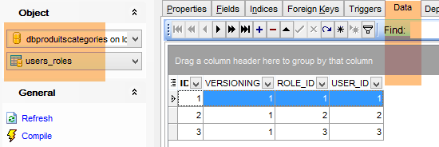
Feito isto, execute a configuração de execução denominada [spring-security-server-jpa-generic-hibernate-eclipselink], que inicia o serviço web seguro (o MySQL deve estar em execução):
 |  |
Em seguida, execute a configuração de execução denominada [spring-security-client-generic-JUnitTestDao], que testa o serviço web seguro:
 |  |
O teste deve ser bem-sucedido.
20.2. O projeto Eclipse [spring-security-server-jdbc-generic]
O serviço web seguro é implementado pelo projeto [spring-security-server-jdbc-generic]:
 |
Acima:
- a camada [DAO1] é a camada [DAO] que gere as tabelas [PRODUITS] e [CATEGORIES] da base de dados [dbproduitscategories]. Já foi criada;
- a camada [DAO2] é a camada [DAO] que gere as tabelas [USERS], [ROLES] e [USERS_ROLES] da base de dados [dbproduitscategories]. Ainda está por criar;
 |
20.2.1. A configuração do Maven
O projeto [spring-security-server-jdbc-generic] é um projeto Maven configurado pelo seguinte ficheiro [pom.xml]:
<project xmlns="http://maven.apache.org/POM/4.0.0" xmlns:xsi="http://www.w3.org/2001/XMLSchema-instance"
xsi:schemaLocation="http://maven.apache.org/POM/4.0.0 http://maven.apache.org/xsd/maven-4.0.0.xsd">
<modelVersion>4.0.0</modelVersion>
<groupId>dvp.spring.database</groupId>
<artifactId>spring-security-server-jdbc-generic</artifactId>
<version>0.0.1-SNAPSHOT</version>
<name>spring-security-server-jdbc-generic</name>
<description>démo spring security</description>
<properties>
<project.build.sourceEncoding>UTF-8</project.build.sourceEncoding>
<java.version>1.7</java.version>
</properties>
<parent>
<groupId>org.springframework.boot</groupId>
<artifactId>spring-boot-starter-parent</artifactId>
<version>1.2.3.RELEASE</version>
</parent>
<dependencies>
<!-- Spring Security -->
<dependency>
<groupId>org.springframework.boot</groupId>
<artifactId>spring-boot-starter-security</artifactId>
</dependency>
<!-- servidor web / jSON -->
<dependency>
<groupId>dvp.spring.database</groupId>
<artifactId>spring-webjson-server-jdbc-generic</artifactId>
<version>0.0.1-SNAPSHOT</version>
</dependency>
</dependencies>
<!-- plugins -->
<build>
<plugins>
<plugin>
<groupId>org.apache.maven.plugins</groupId>
<artifactId>maven-surefire-plugin</artifactId>
<version>2.18.1</version>
</plugin>
</plugins>
</build>
</project>
- linhas 29-33: retoma-se o que já existe com o arquivo do serviço web / json / jdbc analisado;
- linhas 24-27: a dependência que inclui as classes do Spring Security;
No final, o projeto apresenta as seguintes dependências em relação aos outros projetos carregados no Eclipse:
 |
20.2.2. A camada [DAO2]
 |
Acima:
- a camada [DAO1] é a camada [DAO] que gere as tabelas [PRODUITS] e [CATEGORIES] da base de dados [dbproduitscategories]. Já foi criada;
- a camada [DAO2] é a camada [DAO] que gere as tabelas [USERS], [ROLES] e [USERS_ROLES] da base de dados [dbproduitscategories]. É esta que vamos criar agora;
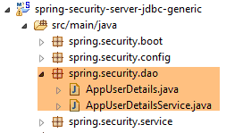 |
O Spring Security exige a criação de uma classe que implemente a seguinte interface [UsersDetail]:
 |
Esta interface é aqui implementada pela classe [AppUserDetails]:
package spring.security.dao;
import generic.jdbc.config.ConfigJdbc;
import java.sql.ResultSet;
import java.sql.SQLException;
import java.util.ArrayList;
import java.util.Collection;
import java.util.Collections;
import java.util.List;
import org.springframework.jdbc.core.RowMapper;
import org.springframework.jdbc.core.namedparam.NamedParameterJdbcTemplate;
import org.springframework.security.core.GrantedAuthority;
import org.springframework.security.core.authority.SimpleGrantedAuthority;
import org.springframework.security.core.userdetails.UserDetails;
import spring.jdbc.entities.Role;
import spring.jdbc.entities.User;
import spring.jdbc.infrastructure.DaoException;
public class AppUserDetails implements UserDetails {
private static final long serialVersionUID = 1L;
// JdbcTemplate
private NamedParameterJdbcTemplate namedParameterJdbcTemplate;
// propriedades
private User user;
private String simpleClassName = getClass().getSimpleName();
// construtores
public AppUserDetails() {
}
public AppUserDetails(User user, NamedParameterJdbcTemplate namedParameterJdbcTemplate) {
this.user = user;
this.namedParameterJdbcTemplate = namedParameterJdbcTemplate;
}
// -------------------------interface
@Override
public Collection<? extends GrantedAuthority> getAuthorities() {
Collection<GrantedAuthority> authorities = new ArrayList<>();
for (Role role : getRoles(user.getId())) {
authorities.add(new SimpleGrantedAuthority(role.getName()));
}
return authorities;
}
...
// métodos privados----------------
private List<Role> getRoles(Long id) {
try {
// procura-se o utilizador através do seu ID
return namedParameterJdbcTemplate.query(ConfigJdbc.SELECT_ROLES_BYUSERID, Collections.singletonMap("id", id), new ShortRoleMapper());
} catch (Exception e) {
//e.printStackTrace();
throw new DaoException(167, e, simpleClassName);
}
}
}
// --------------------- mappers
class ShortRoleMapper implements RowMapper<Role> {
@Override
public Role mapRow(ResultSet rs, int rowNum) throws SQLException {
return new Role(rs.getLong("r_ID"), rs.getLong("r_VERSIONING"), rs.getString("r_NAME"));
}
}
- linha 22: a classe [AppUserDetails] implementa a interface [UserDetails];
- linhas 29-30: a classe encapsula um utilizador (linha 19) e o repositório que permite obter os detalhes desse utilizador (linha 20);
- linha 27: o acesso à base de dados será feito através de JDBC, por meio do objeto [NamedParameterJdbcTemplate namedParameterJdbcTemplate] definido no projeto [spring-jdbc-generic-04]. Note-se que este objeto não é injetado pelo Spring, como costumava acontecer. É fornecido ao construtor nas linhas 36-39. Porquê? Porque a classe [AppUserDetails] não é um componente do Spring (ausência da anotação @Component) e, por isso, não é possível efetuar injeções nela;
- linhas 36-39: o construtor que instancia a classe com um utilizador e o seu repositório;
- linhas 42-49: implementação do método [getAuthorities] da interface [UserDetails]. Este método deve construir uma coleção de elementos do tipo [GrantedAuthority] ou derivado. Aqui, utilizamos o tipo derivado [SimpleGrantedAuthority] (linha 46), que encapsula o nome de uma das funções do utilizador da linha 29;
- linhas 45-47: percorre-se a lista de funções do utilizador da linha 29 para construir uma lista de elementos do tipo [SimpleGrantedAuthority];
- linha 45: para obter as funções do utilizador, utiliza-se o método privado [getRoles] da linha 53;
- linha 56: executa a ordem SQL [ConfigJdbc.SELECT_ROLES_BYUSERID] (definida em [Configjdbc]) da seguinte forma:
public static final String SELECT_ROLES_BYUSERID = "SELECT DISTINCT r.ID as r_ID, r.VERSIONING as r_VERSIONING, r.NAME as r_NAME FROM ROLES r, USERS u, USERS_ROLES ur WHERE u.ID=:id AND ur.USER_ID=u.ID AND ur.ROLE_ID=r.ID";
Esta consulta SQL realiza uma junção entre as três tabelas [USERS, ROLES, USERS_ROLES] para obter as funções de um utilizador identificado pela sua chave primária. É configurada pela chave primária [:id] do utilizador cujas funções se pretendem obter.
- linha 56: cada linha de resultado da consulta [SELECT] é transformada numa entidade [Role] pela classe [ShortRowMapper] nas linhas 66-72;
Voltemos ao código da classe [AppUserDetails]:
package spring.security.dao;
...
public class AppUserDetails implements UserDetails {
private static final long serialVersionUID = 1L;
// JdbcTemplate
private NamedParameterJdbcTemplate namedParameterJdbcTemplate;
// propriedades
private User user;
private String simpleClassName = getClass().getSimpleName();
// construtores
public AppUserDetails() {
}
public AppUserDetails(User user, NamedParameterJdbcTemplate namedParameterJdbcTemplate) {
this.user = user;
this.namedParameterJdbcTemplate = namedParameterJdbcTemplate;
}
// -------------------------interface
@Override
public Collection<? extends GrantedAuthority> getAuthorities() {
Collection<GrantedAuthority> authorities = new ArrayList<>();
for (Role role : getRoles(user.getId())) {
authorities.add(new SimpleGrantedAuthority(role.getName()));
}
return authorities;
}
@Override
public String getPassword() {
return user.getPassword();
}
@Override
public String getUsername() {
return user.getLogin();
}
@Override
public boolean isAccountNonExpired() {
return true;
}
@Override
public boolean isAccountNonLocked() {
return true;
}
@Override
public boolean isCredentialsNonExpired() {
return true;
}
@Override
public boolean isEnabled() {
return true;
}
// getters e setters
...
}
- linhas 35-37: implementam o método [getPassword] da interface [UserDetails]. Retorna-se a palavra-passe do utilizador da linha 12;
- linhas 39-42: implementam o método [getUserName] da interface [UserDetails]. Retorna-se o nome de utilizador da linha 12;
- linhas 44-47: a conta do utilizador nunca expira;
- linhas 49-52: a conta do utilizador nunca é bloqueada;
- linhas 54-57: as credenciais do utilizador nunca expiram;
- linhas 59-62: a conta do utilizador está sempre ativa;
O Spring Security também exige a existência de uma classe que implemente a interface [AppUserDetailsService]:
 |
Esta interface é implementada pela seguinte classe [AppUserDetailsService]:
package spring.security.dao;
import generic.jdbc.config.ConfigJdbc;
import java.sql.ResultSet;
import java.sql.SQLException;
import java.util.Collections;
import java.util.List;
import org.springframework.beans.factory.annotation.Autowired;
import org.springframework.jdbc.core.RowMapper;
import org.springframework.jdbc.core.namedparam.NamedParameterJdbcTemplate;
import org.springframework.security.core.userdetails.UserDetails;
import org.springframework.security.core.userdetails.UserDetailsService;
import org.springframework.security.core.userdetails.UsernameNotFoundException;
import org.springframework.stereotype.Service;
import spring.jdbc.entities.User;
import spring.jdbc.infrastructure.DaoException;
@Service
public class AppUserDetailsService implements UserDetailsService {
// injeções
@Autowired
private NamedParameterJdbcTemplate namedParameterJdbcTemplate;
// local
private String simpleClassName = getClass().getSimpleName();
@Override
public UserDetails loadUserByUsername(String login) throws UsernameNotFoundException {
List<User> users;
try {
// procura-se o utilizador através do seu nome de utilizador
users = namedParameterJdbcTemplate.query(ConfigJdbc.SELECT_USER_BYLOGIN,
Collections.singletonMap("login", login), new ShortUserMapper());
} catch (Exception e) {
throw new DaoException(145, e, simpleClassName);
}
// Encontrado?
if (users.size() == 0) {
throw new UsernameNotFoundException(String.format("login [%s] inexistant", login));
}
// apresentam-se os detalhes do utilizador
return new AppUserDetails(users.get(0), namedParameterJdbcTemplate);
}
}
// --------------------- mappers
class ShortUserMapper implements RowMapper<User> {
@Override
public User mapRow(ResultSet rs, int rowNum) throws SQLException {
return new User(rs.getLong("u_ID"), rs.getLong("u_VERSIONING"), rs.getString("u_NAME"), rs.getString("u_LOGIN"),
rs.getString("u_PASSWORD"));
}
}
- linha 21: a classe será um componente Spring;
- linhas 25-26: o acesso à base de dados será feito através de JDBC, utilizando o objeto [NamedParameterJdbcTemplate namedParameterJdbcTemplate] definido nos beans do projeto [spring-jdbc-generic-04];
- linhas 31-49: implementação do método [loadUserByUsername] da interface [UserDetailsService] (linha 22). O parâmetro é o nome de utilizador;
- linhas 36-37: o utilizador é pesquisado através do seu nome de utilizador. A ordem SQL [ConfigJdbc.SELECT_USER_BYLOGIN] é a seguinte:
public static final String SELECT_USER_BYLOGIN = "SELECT u.ID as u_ID, u.VERSIONING as u_VERSIONING, u.NAME as u_NAME,u.LOGIN as u_LOGIN,u.PASSWORD as u_PASSWORD FROM USERS u WHERE u.LOGIN= :login";
Cada linha devolvida pelo SELECT é transformada na entidade [User] pela classe [ShortUserMapper] das linhas 52-58.
- linhas 42-44: se não for encontrada, é lançada uma exceção;
- linha 46: é criado e apresentado um objeto [AppUserDetails]. Este é, de facto, do tipo [UserDetails] (linha 32). São passadas duas informações ao seu construtor:
- o utilizador que foi encontrado;
- o objeto [namedParameterJdbcTemplate] que permitirá à classe [AppUserDetails] consultar a base de dados;
20.2.3. A camada [web]
 |
O projeto [spring-security-server-jdbc-generic] depende do projeto [spring-webjson-server-jdbc-generic]:
|
É este projeto que implementa a camada [web]. Esta não precisa de ser alterada.
20.2.4. A configuração de segurança do projeto
 |
O projeto é configurado pela seguinte classe [AppConfig]:
1  |
Já nos deparámos com uma classe de configuração do Spring Security (ver parágrafo 19.2.4):
package hello;
import org.springframework.context.annotation.Configuration;
import org.springframework.security.config.annotation.authentication.builders.AuthenticationManagerBuilder;
import org.springframework.security.config.annotation.web.builders.HttpSecurity;
import org.springframework.security.config.annotation.web.configuration.WebSecurityConfigurerAdapter;
import org.springframework.security.config.annotation.web.servlet.configuration.EnableWebMvcSecurity;
@Configuration
@EnableWebMvcSecurity
public class WebSecurityConfig extends WebSecurityConfigurerAdapter {
@Override
protected void configure(HttpSecurity http) throws Exception {
http.authorizeRequests().antMatchers("/", "/home").permitAll().anyRequest().authenticated();
http.formLogin().loginPage("/login").permitAll().and().logout().permitAll();
}
@Override
protected void configure(AuthenticationManagerBuilder auth) throws Exception {
auth.inMemoryAuthentication().withUser("user").password("password").roles("USER");
}
}
Vamos seguir o mesmo procedimento:
- linha 11: definir uma classe que estenda a classe [WebSecurityConfigurerAdapter];
- linha 13: definir um método [configure(HttpSecurity http)] que define os direitos de acesso aos diferentes URL do serviço web;
- linha 19: definir um método [configure(AuthenticationManagerBuilder auth)] que define os utilizadores e as suas funções;
A classe [AppConfig] será a seguinte:
package spring.security.config;
import org.springframework.beans.factory.annotation.Autowired;
import org.springframework.context.annotation.ComponentScan;
import org.springframework.context.annotation.Configuration;
import org.springframework.context.annotation.Import;
import org.springframework.http.HttpMethod;
import org.springframework.security.config.annotation.authentication.builders.AuthenticationManagerBuilder;
import org.springframework.security.config.annotation.web.builders.HttpSecurity;
import org.springframework.security.config.annotation.web.configuration.EnableWebSecurity;
import org.springframework.security.config.annotation.web.configuration.WebSecurityConfigurerAdapter;
import org.springframework.security.crypto.bcrypt.BCryptPasswordEncoder;
import spring.security.dao.AppUserDetailsService;
import spring.webjson.server.config.WebConfig;
@Configuration
@EnableWebSecurity
@ComponentScan(basePackages = { "spring.security.dao", "spring.security.service" })
@Import({ spring.webjson.server.config.AppConfig.class, WebConfig.class })
public class AppConfig extends WebSecurityConfigurerAdapter {
@Autowired
private AppUserDetailsService appUserDetailsService;
// segurança
private boolean activateSecurity = true;
@Override
protected void configure(AuthenticationManagerBuilder registry) throws Exception {
// a autenticação é feita pelo bean [appUserDetailsService]
// a palavra-passe é encriptada pelo algoritmo de hash BCrypt
registry.userDetailsService(appUserDetailsService).passwordEncoder(new BCryptPasswordEncoder());
}
@Override
protected void configure(HttpSecurity http) throws Exception {
// CSRF
http.csrf().disable();
// aplicação segura?
if (activateSecurity) {
// a palavra-passe é transmitida através do cabeçalho Authorization: Basic xxxx
http.httpBasic();
// o método HTTP OPTIONS deve ser autorizado para todos
http.authorizeRequests() //
.antMatchers(HttpMethod.OPTIONS, "/", "/**").permitAll();
// apenas a função ADMIN pode utilizar a aplicação
http.authorizeRequests() //
.antMatchers("/", "/**") // todas as URL
.hasRole("ADMIN");
// com sessão ou sem sessão?
//http.sessionManagement().sessionCreationPolicy(SessionCreationPolicy.STATELESS);
}
}
}
- linha 17: a classe é uma classe de configuração do Spring;
- linha 18: ativa os elementos do Spring Security;
- linha 26: recuperam-se os componentes Spring da camada [DAO2] e os do pacote [spring.security.service], sobre os quais falaremos mais adiante;
- linha 23: importam-se os beans do projeto [spring-webjson-server-jdbc-generic], que implementa a camada [web]. Entre esses beans, encontram-se também os da camada [DAO1];
- linhas 22-23: é injetada a classe [AppUserDetails], que dá acesso aos utilizadores da aplicação;
- linha 26: um valor booleano que protege (true) ou não (false) a aplicação web;
- linhas 28-33: o método [configure(HttpSecurity http)] define os utilizadores e as suas funções. Recebe como parâmetro um tipo [AuthenticationManagerBuilder]. Este parâmetro é complementado com duas informações (linha 32):
- uma referência ao serviço [appUserDetailsService] da linha 23, que dá acesso aos utilizadores registados. Note-se aqui que o facto de estarem registados numa base de dados não é indicado. Podem, portanto, estar num cache, fornecidos por um serviço web, etc.
- o tipo de encriptação utilizado para a palavra-passe. Utilizámos o algoritmo BCrypt;
- linhas 35-53: o método [configure(HttpSecurity http)] define os direitos de acesso aos URL do serviço web;
- linha 38: vimos no projeto de introdução que, por predefinição, o Spring Security gerava um token CSRF (Cross Site Request Forgery) que o utilizador que pretendesse autenticar-se tinha de reenviar ao servidor. Aqui, este mecanismo está desativado. Isto, juntamente com o valor booleano (isSecured=false), permite utilizar a aplicação web sem segurança;
- linha 42: ativa-se o modo de autenticação por cabeçalho HTTP. O cliente deverá enviar o seguinte cabeçalho HTTP:
onde «code» é a codificação da cadeia «login:password» através do algoritmo Base64. Por exemplo, a codificação Base64 da cadeia admin:admin é YWRtaW46YWRtaW4=. Assim, o utilizador com o nome de utilizador [admin] e a palavra-passe [admin] enviará o seguinte cabeçalho HTTP para se autenticar:
- linhas 47-49: indicam que todos os URL do serviço web estão acessíveis aos utilizadores com a função [ROLE_ADMIN]. Isto significa que um utilizador que não tenha essa função não pode aceder ao serviço web;
- linha 51: no modo [session], um utilizador que se tenha autenticado uma vez não precisa de o fazer nos acessos seguintes. Este é o valor predefinido do Spring Security. A linha 51 desativa este modo. Se estiver ativa, o utilizador terá de se autenticar em cada acesso. Sem sessão, a capacidade de resposta do serviço web seguro é menor do que com sessão, pelo que a linha 51 foi colocada em comentário;
20.2.5. Testes do serviço web seguro
Vamos testar o serviço web com o cliente Chrome [Advanced Rest Client]. Teremos de especificar o cabeçalho de autenticação HTTP:
onde [code] é o código Base64 da cadeia [login:password]. Para gerar este código, pode utilizar-se o seguinte programa do projeto [spring-security-create-users]:
 |
package spring.security.helpers;
import org.springframework.security.crypto.codec.Base64;
public class Base64Encoder {
public static void main(String[] args) {
// são esperados dois argumentos: nome de utilizador e palavra-passe
if (args.length != 2) {
System.out.println("Syntaxe : login password");
System.exit(0);
}
// recuperam-se os dois argumentos
String chaîne = String.format("%s:%s", args[0], args[1]);
// codifica-se a cadeia
byte[] data = Base64.encode(chaîne.getBytes());
// exibe a sua codificação Base64
System.out.println(new String(data));
}
}
Se executarmos este programa com os dois argumentos [admin admin]:
 |
obtemos o seguinte resultado:
Estamos agora prontos para os testes:
- o SGBD MySQL deve ser executado;
- preenchemos as tabelas [PRODUITS] e [CATEGORIES] com a configuração de execução denominada [spring-jdbc-generic-04-fillDataBase]:
 |
- se ainda não tiver sido feito, preenchemos as tabelas [USERS, ROLES, USERS_ROLES] com a configuração de execução denominada [spring-security-create-users-hibernate-eclipselink]:
 |
- Iniciamos o serviço web seguro com a configuração de execução denominada [spring-security-server-jdbc-generic]:
 |
Em seguida, com o cliente Chrome [Advanced Rest Client], solicitamos a versão completa de todas as categorias:
 |
- em [1], solicitamos o URL das categorias completas;
- em [2], com um método GET;
- em [3], fornecemos o cabeçalho HTTP da autenticação. O código [YWRtaW46YWRtaW4=] é a codificação Base64 da cadeia [admin:admin];
- em [4], enviamos o comando HTTP;
A resposta do servidor é a seguinte:
 |
- em [1], o cabeçalho de autenticação HTTP;
- em [2], o servidor devolve uma resposta jSON;
Consegue-se, de facto, a lista de categorias:
 |
Vamos agora tentar uma solicitação HTTP com um cabeçalho de autenticação incorreto. A resposta é então a seguinte:
 |
- em [1]: o cabeçalho de autenticação HTTP;
Obtemos a seguinte resposta:
 |
- em [2]: a resposta do serviço web;
Agora, vamos experimentar o utilizador user / user. Este existe, mas não tem acesso ao serviço web. Se executarmos o programa de codificação Base64 com os dois argumentos [user user]:
 |
obtemos o seguinte resultado:
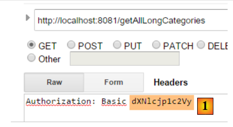 |
- em [1]: o cabeçalho de autenticação HTTP está incorreto;
 |
- em [2]: a resposta do serviço web. É diferente da anterior, que era [401 Unauthorized]. Desta vez, o utilizador autenticou-se corretamente, mas não possui direitos suficientes para aceder ao URL;
Um serviço web seguro está agora operacional.
20.2.6. Um URL de autenticação
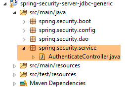 |
Vamos criar um URL que nos permitirá saber se um utilizador está autorizado ou não a aceder ao serviço web. Para tal, criamos o seguinte novo controlador MVC [AuthenticateController]:
package spring.security.service;
import org.springframework.web.bind.annotation.RequestMapping;
import org.springframework.web.bind.annotation.RequestMethod;
import org.springframework.web.bind.annotation.RestController;
import spring.webjson.server.service.Response;
@RestController
public class AuthenticateController {
@RequestMapping(value = "/authenticate", method = RequestMethod.GET)
public Response<Void> authenticate() {
return new Response<Void>(0, null, null);
}
}
- linha 9: a classe [AuthenticateController] é um controlador Spring. Como tal, expõe os URL. A anotação [@RestController] indica que os métodos que processam estes URL enviam eles próprios a sua resposta ao cliente;
- linha 11: apresenta o URL [/authenticate];
- linhas 12-14: o método limita-se a devolver um objeto [Response] vazio, mas com um [status] igual a 0, indicando que não ocorreu qualquer erro;
Para que serve este URL? Quando quisermos simplesmente autenticar um utilizador, iremos solicitá-lo. Vimos que, se a camada de segurança não aceitar esse utilizador, devolve uma exceção. Eis um exemplo;
Com o utilizador [admin:admin]:
 |  |
Recebemos uma resposta vazia, mas não há exceção.
Com o utilizador [user:user]:
 |  |
Ocorreu uma exceção.
20.2.7. Conclusão
A adição das classes necessárias ao Spring Security foi possível sem alterações no projeto web/json original. Este cenário muito favorável deve-se ao facto de as três tabelas adicionadas à base de dados serem independentes das tabelas existentes. Teríamos até podido colocá-las numa base de dados separada. Noutros casos, as tabelas adicionadas podem ter relações com as tabelas existentes. O código da camada [DAO] existente deve, então, ser revisto.
20.3. Um cliente programado para o serviço web / jSON seguro
Já criámos um cliente para o serviço web / jSON não seguro:
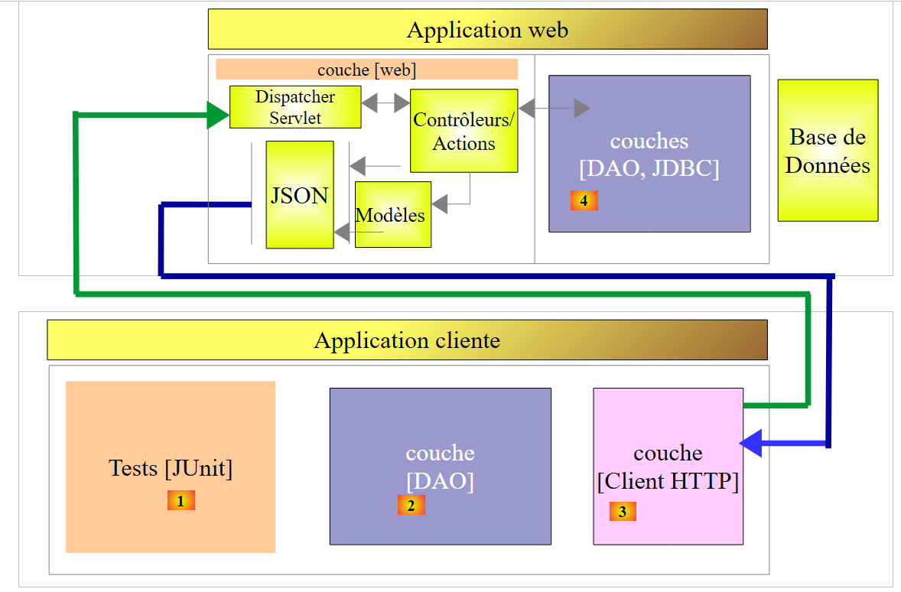 |
Vamos agora criar um cliente programado para o serviço web seguro:
 |
 |
20.3.1. A camada [Client HTTP]
 |
 |  |
A classe [Client] assegura a comunicação HTTP com o servidor web / jSON seguro. Como acabámos de ver, nesta comunicação HTTP, o cliente deve agora enviar um cabeçalho de autenticação, por exemplo:
A interface [IClient] passa a ser a seguinte:
package spring.webjson.client.dao;
import org.springframework.http.HttpMethod;
import spring.webjson.client.entities.Credentials;
public interface IClient {
public <T1, T2> T1 getResponse(Credentials credentials,String url, HttpMethod method, int errStatus, T2 body);
}
- linha 8: o primeiro parâmetro do método [getResponse] é agora um objeto [Credentials] que encapsula os identificadores de um utilizador:
package spring.security.client.entities;
public class Credentials {
// propriedades
private String login;
private String password;
// construtor
public Credentials() {
}
public Credentials(String login, String password) {
this.login = login;
this.password = password;
}
// getters e setters
...
}
A classe [Client], que implementa a interface [IClient], sofre as seguintes alterações:
package spring.security.client.dao;
...
@Component
public class Client implements IClient {
// injeções
@Autowired
protected RestTemplate restTemplate;
@Autowired
protected String urlServiceWebJson;
// local
private String simpleClassName = getClass().getSimpleName();
private String getBase64(Credentials credentials) {
// o utilizador e a sua palavra-passe são codificados em base 64 - requer Java 8
String chaîne = String.format("%s:%s", credentials.getLogin(), credentials.getPassword());
return String.format("Basic %s", new String(Base64.getEncoder().encode(chaîne.getBytes())));
}
// pedido genérico
@Override
public <T1, T2> T1 getResponse(Credentials credentials, String url, HttpMethod method, int errStatus, T2 body) {
// a resposta do servidor
ResponseEntity<Response<T1>> response;
try {
// prepara-se a solicitação
RequestEntity<?> request = null;
if (method == HttpMethod.GET) {
HeadersBuilder<?> headersBuilder = RequestEntity.get(new URI(String.format("%s%s", urlServiceWebJson, url))) .accept(MediaType.APPLICATION_JSON);
if (credentials != null) {
headersBuilder = headersBuilder.header("Authorization", getBase64(credentials));
}
request = headersBuilder.build();
}
if (method == HttpMethod.POST) {
BodyBuilder bodyBuilder = RequestEntity.post(new URI(String.format("%s%s", urlServiceWebJson, url))).header("Content-Type", "application/json").accept(MediaType.APPLICATION_JSON);
if (credentials != null) {
bodyBuilder = bodyBuilder.header("Authorization", getBase64(credentials));
}
request = bodyBuilder.body(body);
}
// executa-se a solicitação
response = restTemplate.exchange(request, new ParameterizedTypeReference<Response<T1>>() {
});
} catch (Exception e) {
// encapsulando a exceção
throw new DaoException(errStatus, e, simpleClassName);
}
...
}
...
}
- linhas 33-35, 40-42: se o utilizador [credentials] não for nulo, então é adicionado o cabeçalho de autenticação. A encriptação Base64 do utilizador e da sua palavra-passe é assegurada pelo método [getBase64] das linhas 17-21. É importante ter em conta que este método utiliza uma classe [Base64] pertencente ao JDK 1.8. O nosso cliente HTTP pode funcionar com um serviço web não seguro. Basta passar-lhe um [credentials] igual a null;
- fora das linhas anteriores, o código permanece inalterado;
20.3.2. A camada [DAO]
 |
20.3.2.1. A interface [IDao]
 |
Todos os métodos da interface [IDao] do projeto [spring-webjson-client-generic] recebem um parâmetro adicional [Credentials credentials]:
package spring.security.client.dao;
import java.util.List;
import spring.security.client.entities.AbstractCoreEntity;
import spring.security.client.entities.Credentials;
public interface IDao<T extends AbstractCoreEntity> extends IAuthenticate {
// lista de todas as entidades T
public List<T> getAllShortEntities(Credentials credentials);
public List<T> getAllLongEntities(Credentials credentials);
// de entidades específicas - versão curta
public List<T> getShortEntitiesById(Credentials credentials, Iterable<Long> ids);
public List<T> getShortEntitiesById(Credentials credentials, Long... ids);
public List<T> getShortEntitiesByName(Credentials credentials, Iterable<String> names);
public List<T> getShortEntitiesByName(Credentials credentials, String... names);
// de entidades específicas - versão longa
public List<T> getLongEntitiesById(Credentials credentials, Iterable<Long> ids);
public List<T> getLongEntitiesById(Credentials credentials, Long... ids);
public List<T> getLongEntitiesByName(Credentials credentials, Iterable<String> names);
public List<T> getLongEntitiesByName(Credentials credentials, String... names);
// atualização de várias entidades
public List<T> saveEntities(Credentials credentials, Iterable<T> entities);
public List<T> saveEntities(Credentials credentials, @SuppressWarnings("unchecked") T... entities);
// eliminação de todas as entidades
public void deleteAllEntities(Credentials credentials);
// eliminação de várias entidades
public void deleteEntitiesById(Credentials credentials, Iterable<Long> ids);
public void deleteEntitiesById(Credentials credentials, Long... ids);
public void deleteEntitiesByName(Credentials credentials, Iterable<String> names);
public void deleteEntitiesByName(Credentials credentials, String... names);
public void deleteEntitiesByEntity(Credentials credentials, Iterable<T> entities);
public void deleteEntitiesByEntity(Credentials credentials, @SuppressWarnings("unchecked") T... entities);
}
- linha 8: a interface [IDao] estende a seguinte interface [IAuthenticate]:
package spring.security.client.dao;
import spring.security.client.entities.Credentials;
public interface IAuthenticate {
// autenticação
public void authenticate(Credentials credentials);
}
A interface [IAuthenticate] possui apenas o método [authenticate]. Este método não retorna nada (void) se o utilizador [Credentials credentials] for aceite pelo serviço web seguro; caso contrário, lança uma exceção.
20.3.2.2. A classe [AbstractDao]
 |
Recorde-se que a classe [AbstractDao] é a classe pai das classes [DaoCategorie], que gerem os URL das categorias, e da classe [DaoProduit], que gere os URL dos produtos. Todos os métodos da classe [AbstractDao] do projeto [spring-webjson-client-generic] recebem um parâmetro adicional [Credentials credentials], que passam para a classe filha. Eis um exemplo:
@Override
public List<T1> getShortEntitiesById(Credentials credentials, Iterable<Long> ids) {
// validade do argumento
List<T1> entities = checkNullOrEmptyArgument(true, ids);
if (entities != null) {
return entities;
}
// resultado
return getShortEntitiesById(credentials, Lists.newArrayList(ids));
}
- o método [getShortEntitiesById] recebe o parâmetro [Credentials credentials] (linha 2), que transmite (linha 9) ao método [getShortEntitiesById] da classe filha;
A classe [AbstractDao] tem a seguinte estrutura:
package spring.security.client.dao;
import java.util.ArrayList;
import java.util.List;
import org.springframework.beans.factory.annotation.Autowired;
import spring.security.client.entities.AbstractCoreEntity;
import spring.security.client.entities.Credentials;
import spring.security.client.infrastructure.MyIllegalArgumentException;
import com.google.common.collect.Lists;
public abstract class AbstractDao<T1 extends AbstractCoreEntity> implements IDao<T1> {
@Autowired
private IAuthenticate authenticate;
...
}
- linha 14: a classe implementa a interface [IDao] que descrevemos;
- linhas 16-17: é injetada uma instância da interface [IAuthenticate]. Esta é implementada pela seguinte classe [Authenticate]:
package spring.security.client.dao;
import org.springframework.beans.factory.annotation.Autowired;
import org.springframework.http.HttpMethod;
import org.springframework.stereotype.Component;
import spring.security.client.entities.Credentials;
@Component
public class Authenticate implements IAuthenticate{
@Autowired
protected IClient client;
// verificação [credentials,mdp]
public void authenticate(Credentials credentials) {
client.<Void, Void> getResponse(credentials, "/authenticate", HttpMethod.GET, 111, (Void) null);
}
}
- linha 9: a classe [Authenticate] é um componente Spring;
- linha 10: que implementa a interface [IAuthenticate];
- linhas 11-12: injeção do cliente HTTP, que permite a comunicação com o serviço web seguro;
- linhas 15-17: implementação do método [authenticate] da interface;
- linha 16: é emitido um comando HTTP GET para o URL [/authenticate]. A utilização deste URL foi demonstrada no parágrafo 20.2.6. O seu princípio consiste em que a chamada termina com uma exceção se o utilizador [credentials] for desconhecido ou não tiver direitos suficientes;
A classe [AbstractDao] implementa o método [authenticate] da interface [IDao] da seguinte forma:
@Autowired
private IAuthenticate authenticate;
@Override
public void authenticate(Credentials credentials) {
authenticate.authenticate(credentials);
}
- linha 7: a tarefa é delegada ao método [authenticate] da classe [Authenticate]. Por conseguinte, ocorrerá uma exceção se o utilizador [Credentials credentials] não for aceite pelo serviço web seguro;
20.3.2.3. As turmas [DaoCategorie, DaoProduit]
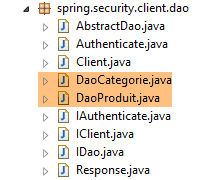 |
As classes [DaoCategorie, DaoProduit] são as do projeto [spring-webjson-server-generic] com o parâmetro adicional [Credentials credentials]. Eis um exemplo:
@Component
public class DaoCategorie extends AbstractDao<Categorie> {
// injeções
@Autowired
protected ApplicationContext context;
@Autowired
protected IClient client;
@Override
public List<Categorie> getAllShortEntities(Credentials credentials) {
try {
// filtros jSON
ObjectMapper mapper = context.getBean("jsonMapperShortCategorie", ObjectMapper.class);
// obter todas as categorias
Object map = client.<List<Categorie>, Void> getResponse(credentials, "/getAllShortCategories", HttpMethod.GET,
202, null);
// a lista de categorias List<Categoria>
return mapper.readValue(mapper.writeValueAsString(map), new TypeReference<List<Categorie>>() {
});
} catch (DaoException e1) {
throw e1;
} catch (Exception e2) {
throw new DaoException(221, e2, simpleClassName);
}
}
....
20.3.3. A configuração do Spring
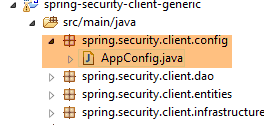 |
A classe [AppConfig] configura o ambiente Spring do projeto. É idêntica à que existia no projeto [spring-webjson-client-generic], com uma única diferença:
@Configuration
@ComponentScan({ "spring.security.client.dao" })
public class AppConfig {
- linha 2: é necessário indicar o pacote da nova camada [DAO];
20.3.4. Testes da camada [DAO]
 |
 |
20.3.4.1. O teste [JUnitTestCredentials]
O teste [JUnitTestCredentials] utiliza o método [IDao.authenticate] para verificar a validade ou não de determinados utilizadores:
package client.tests.junit;
import org.junit.Assert;
import org.junit.BeforeClass;
import org.junit.Test;
import org.junit.runner.RunWith;
import org.springframework.beans.factory.annotation.Autowired;
import org.springframework.boot.test.SpringApplicationConfiguration;
import org.springframework.test.context.junit4.SpringJUnit4ClassRunner;
import spring.security.client.config.AppConfig;
import spring.security.client.dao.IAuthenticate;
import spring.security.client.entities.Credentials;
import spring.security.client.infrastructure.DaoException;
@SpringApplicationConfiguration(classes = AppConfig.class)
@RunWith(SpringJUnit4ClassRunner.class)
public class JUnitTestCredentials {
// camada [DAO]
@Autowired
private IAuthenticate authenticate;
// utilizadores
static private Credentials admin;
static private Credentials user;
static private Credentials unknown;
@BeforeClass
public static void init() {
admin = new Credentials("admin", "admin");
user = new Credentials("user", "user");
unknown = new Credentials("x", "y");
}
@Test()
public void checkUserUser() {
DaoException se = null;
try {
authenticate.authenticate(user);
} catch (DaoException e) {
se = e;
System.out.println("checkUserUser: " + e);
}
Assert.assertNotNull(se);
Assert.assertEquals("403 Forbidden", se.getExceptions().get(0).getErrorMessage());
}
@Test()
public void checkUserUnknown() {
DaoException se = null;
try {
authenticate.authenticate(unknown);
} catch (DaoException e) {
se = e;
System.out.println("checkUserUnknown : " + e);
}
Assert.assertNotNull(se);
Assert.assertEquals("401 Unauthorized", se.getExceptions().get(0).getErrorMessage());
}
@Test()
public void checkUserAdmin() {
DaoException se = null;
try {
authenticate.authenticate(admin);
} catch (DaoException e) {
se = e;
System.out.println("checkUserAdmin : " + e);
}
Assert.assertNull(se);
}
}
- Durante a inicialização da classe de teste, nas linhas 29 a 34, são criados três utilizadores:
- o utilizador [admin] tem acesso aos URL do serviço web. É testado nas linhas 63-72;
- o utilizador [user] existe, mas não está autorizado a utilizar os URL do serviço web. É testado nas linhas 37-47;
- o utilizador [unknown] não existe. É testado nas linhas 50-60;
Inicia-se o serviço web seguro com a configuração de execução denominada [spring-security-server-jdbc-generic] [1]:
 |
Em seguida, é iniciado o teste JUnit [JUnitTestCredentials] com a configuração de execução [spring-security-client-generic-JUnitTestCredentials] [2]. Os resultados obtidos na consola são os seguintes:
e o teste foi bem-sucedido:
 |
20.3.4.2. O teste [JUnitTestDao]
O teste [JUnitTestDao] é idêntico ao que era no projeto não seguro [spring-webjson-client-generic], se não forque agora os métodos da camada [DAO] testados têm todos como primeiro parâmetro o utilizador [admin / admin]:
@SpringApplicationConfiguration(classes = AppConfig.class)
@RunWith(SpringJUnit4ClassRunner.class)
public class JUnitTestDao {
// contexto Spring
@Autowired
private ApplicationContext context;
// camada [DAO]
@Autowired
private IDao<Produit> daoProduit;
@Autowired
private IDao<Categorie> daoCategorie;
....
// utilizadores
static private Credentials admin;
@BeforeClass
public static void init() {
admin = new Credentials("admin", "admin");
}
@Before
public void clean() {
// limpa-se a base de dados antes de cada teste
log("Vidage de la base de données", 1);
// esvazia-se a tabela [CATEGORIES] e, em cadeia, a tabela [PRODUITS]
daoCategorie.deleteAllEntities(admin);
// esvaziam-se os dicionários
for (Long id : mapCategories.keySet()) {
mapCategories.remove(id);
}
for (Long id : mapProduits.keySet()) {
mapProduits.remove(id);
}
}
private List<Categorie> fill(int nbCategories, int nbProduits) {
// preenchem-se as tabelas
...
// adição da categoria — em cadeia, os produtos também serão
// inseridos — o resultado é apresentado em simultâneo
return daoCategorie.saveEntities(admin, categories);
}
private Object[] showDataBase() throws BeansException, JsonProcessingException {
// lista de categorias
log("Liste des catégories", 2);
List<Categorie> categories = daoCategorie.getAllShortEntities(admin);
affiche(categories, context.getBean("jsonMapperShortCategorie", ObjectMapper.class));
// lista de produtos
log("Liste des produits", 2);
List<Produit> produits = daoProduit.getAllShortEntities(admin);
affiche(produits, context.getBean("jsonMapperShortProduit", ObjectMapper.class));
// resultado
return new Object[] { categories, produits };
}
...
Todas as operações são realizadas com o utilizador [admin / admin], que é o único com direito de acesso ao serviço web seguro.
O teste será iniciado com a configuração de execução denominada [spring-security-client-generic-JUnitTestDao]:
 |
O teste é bem-sucedido, mas verifica-se que é mais lento do que com o serviço web não seguro. A securização de uma aplicação aumenta significativamente os seus tempos de resposta. É possível observar um fator importante no desempenho do serviço web seguro: na classe [AppConfig] que o configura, escrevemos:
@Override
protected void configure(HttpSecurity http) throws Exception {
// CSRF
http.csrf().disable();
// aplicação segura?
if (activateSecurity) {
// a palavra-passe é transmitida através do cabeçalho Authorization: Basic xxxx
http.httpBasic();
// o método HTTP OPTIONS deve ser autorizado para todos
http.authorizeRequests() //
.antMatchers(HttpMethod.OPTIONS, "/", "/**").permitAll();
// apenas a função ADMIN pode utilizar a aplicação
http.authorizeRequests() //
.antMatchers("/", "/**") // todas as URL
.hasRole("ADMIN");
// sem sessão
http.sessionManagement().sessionCreationPolicy(SessionCreationPolicy.STATELESS);
}
}
A linha 17 tem um custo. Ela obriga ou não o utilizador a autenticar-se em cada acesso. Se a colocarmos em comentários, a duração do teste JUnit é significativamente menor, isto porque o utilizador [admin] só se autentica no primeiro teste e não nos seguintes (mesmo que o cabeçalho de autenticação HTTP seja enviado pelo cliente, o servidor não volta a verificar a palavra-passe do utilizador).
20.4. O projeto Eclipse [spring-security-server-jpa-generic]
O serviço web seguro vai agora ser implementado pelo projeto [spring-security-server-jpa-generic], que se baseia no projeto [spring-jpa-generic], o qual gere os acessos à base de dados com o Spring Data JPA:
 |
Acima:
- a camada [DAO1] é a camada [DAO], que gere as tabelas [PRODUITS] e [CATEGORIES] da base de dados [dbproduitscategories]. Já foi criada;
- a camada [DAO2] é a camada [DAO] que gere as tabelas [USERS], [ROLES] e [USERS_ROLES] da base de dados [dbproduitscategories]. Ainda está por criar;
O projeto [spring-security-server-jpa-generic] é obtido, em primeiro lugar, por cópia do projeto analisado anteriormente, [spring-security-server-jdbc-generic]. Com efeito, as camadas [web] e [security] não se alteram porque:
- a camada [DAO1 / Repositories / JPA] (já escrita) tem a mesma interface que a camada [DAO1 / JDBC];
- a camada [DAO2 / Repositories / JPA] (a gravar) terá a mesma interface que a camada [DAO2 / JDBC];
O projeto [spring-security-server-jpa-generic] é o seguinte:
 |
- o pacote [spring.security.repositories] implementa a camada [repositories];
- o pacote [spring.security.dao] implementa a camada [dao2];
20.4.1. O projeto Maven
O projeto é um projeto Maven configurado pelo seguinte ficheiro [pom.xml]:
<project xmlns="http://maven.apache.org/POM/4.0.0" xmlns:xsi="http://www.w3.org/2001/XMLSchema-instance"
xsi:schemaLocation="http://maven.apache.org/POM/4.0.0 http://maven.apache.org/xsd/maven-4.0.0.xsd">
<modelVersion>4.0.0</modelVersion>
<groupId>dvp.spring.database</groupId>
<artifactId>spring-security-server-jpa-generic</artifactId>
<version>0.0.1-SNAPSHOT</version>
<name>spring-security-server-jpa-generic</name>
<description>démo spring security</description>
<properties>
<project.build.sourceEncoding>UTF-8</project.build.sourceEncoding>
<java.version>1.7</java.version>
</properties>
<parent>
<groupId>org.springframework.boot</groupId>
<artifactId>spring-boot-starter-parent</artifactId>
<version>1.2.3.RELEASE</version>
</parent>
<dependencies>
<!-- Spring Security -->
<dependency>
<groupId>org.springframework.boot</groupId>
<artifactId>spring-boot-starter-security</artifactId>
</dependency>
<!-- servidor web / jSON -->
<dependency>
<groupId>dvp.spring.database</groupId>
<artifactId>spring-webjson-server-jpa-generic</artifactId>
<version>0.0.1-SNAPSHOT</version>
</dependency>
</dependencies>
<!-- plugins -->
<build>
<plugins>
<plugin>
<groupId>org.apache.maven.plugins</groupId>
<artifactId>maven-surefire-plugin</artifactId>
<version>2.18.1</version>
</plugin>
</plugins>
</build>
</project>
- linhas 24-27: a dependência da camada [security] do projeto;
- linhas 29-33: a dependência da camada [web] do projeto. O projeto [spring-webjson-server-jpa-generic] implementa na íntegra a camada [web]. Esta não precisa de ser escrita nem alterada;
Em suma, as dependências são as seguintes:
 |
20.4.2. A configuração do Spring
 |
O ficheiro de configuração [AppConfig] do projeto anterior [spring-security-server-jdbc-generic] é adequado. Basta adicionar-lhe uma configuração adicional:
@Configuration
@EnableWebSecurity
@EnableJpaRepositories(basePackages = { "spring.security.repositories" })
@ComponentScan(basePackages = { "spring.security.dao", "spring.security.service" })
@Import({ spring.webjson.server.config.AppConfig.class })
public class AppConfig extends WebSecurityConfigurerAdapter {
- linha 3: declara-se o pacote que implementa a camada [repositories];
- linha 4: os pacotes que contêm os beans Spring têm o mesmo nome no novo projeto;
- linha 5: no projeto anterior, a classe [spring.webjson.server.config.AppConfig] encontrava-se na dependência [spring-webjson-server-jdbc-generic]. Aqui, será encontrada na dependência [spring-webjson-server-jpa-generic];
20.4.3. A camada JPA
 |
As entidades JPA geridas pela camada [JPA] encontram-se no projeto [mysql-config-jpa-hibernate] [2], que é uma dependência do projeto [1]:
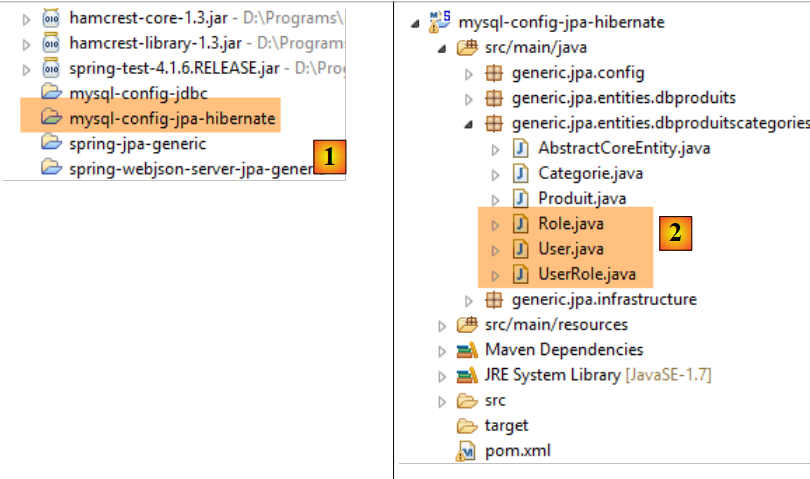 |
A classe [User] é a imagem da tabela [USERS]:
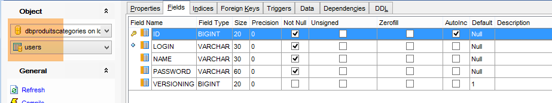
- ID: chave primária;
- VERSION: coluna de controlo de versões da linha;
- IDENTITY: uma identificação descritiva do utilizador;
- LOGIN: o nome de utilizador do utilizador;
- PASSWORD: a sua palavra-passe;
package generic.jpa.entities.dbproduitscategories;
import generic.jdbc.config.ConfigJdbc;
import java.util.List;
import javax.persistence.CascadeType;
import javax.persistence.Column;
import javax.persistence.Entity;
import javax.persistence.FetchType;
import javax.persistence.GeneratedValue;
import javax.persistence.GenerationType;
import javax.persistence.Id;
import javax.persistence.OneToMany;
import javax.persistence.Table;
import javax.persistence.Transient;
import javax.persistence.Version;
import com.fasterxml.jackson.annotation.JsonIgnore;
@Entity
@Table(name = ConfigJdbc.TAB_USERS)
public class User implements AbstractCoreEntity {
// propriedades
@Id
@GeneratedValue(strategy = GenerationType.IDENTITY)
@Column(name = ConfigJdbc.TAB_JPA_ID)
protected Long id;
@Version
@Column(name = ConfigJdbc.TAB_JPA_VERSIONING)
protected Long version;
@Transient
protected EntityType entityType=EntityType.POJO;
// propriedades
@Column(name = ConfigJdbc.TAB_USERS_NAME, length = 30, nullable = false)
private String name;
@Column(name = ConfigJdbc.TAB_USERS_LOGIN, length = 30, unique = true, nullable = false)
private String login;
@Column(name = ConfigJdbc.TAB_USERS_PASSWORD, length = 60, nullable = false)
private String password;
// os UserRole associados
@OneToMany(fetch = FetchType.LAZY, mappedBy = "user", cascade = { CascadeType.ALL })
@JsonIgnore
private List<UserRole> userRoles;
// fabricantes
public User() {
}
public User(Long id, Long version, String identity, String login, String password) {
this.id = id;
this.version = version;
this.name = identity;
this.login = login;
this.password = password;
}
// ------------------------------------------------------------
// redefinição de [equals] e [hashcode]
...
// getters e setters
...
}
- linha 23: a classe implementa a interface [AbstractCoreEntity] já utilizada para as outras entidades;
- linhas 34-35: o tipo da entidade. Esta propriedade não é guardada na base de dados [@Transient];
- linhas 38-43: as três propriedades básicas de um utilizador (nome, nome de utilizador, palavra-passe);
- linhas 46-48: a lista de funções do utilizador. Este pode ter várias. Da mesma forma, veremos que a uma função podem estar associados vários utilizadores. Temos, portanto, no sentido JPA do termo, uma relação [ManyToMany] entre as entidades [User] e [Role]:
- um utilizador pode estar associado a várias funções;
- uma função pode estar associada a vários utilizadores;
Esta relação [ManyToMany] é implementada na base de dados através da tabela de junção [USERS_ROLES]. Se um utilizador U tiver uma relação com uma função R, essa relação é registada na tabela [USERS_ROLES], através do registo do par de chaves primárias das entidades (U,R). Na tabela JPA, a relação [ManyToMany] que liga as entidades [User] e [Role] pode ser dividida em duas relações [ManyToOne, OneToMany]:
- (continuação)
- uma relação [ManyToOne] da entidade [User] para a entidade [UserRole];
- uma relação [OneToMany] da entidade [UserRole] para a entidade [UserRole];
Da mesma forma, a relação [ManyToMany] que liga as entidades [Role] e [User] pode ser dividida em duas relações [ManyToOne, OneToMany]:
- (continuação)
- uma relação [ManyToOne] da entidade [Role] para a entidade [UserRole];
- uma relação [OneToMany] da entidade [UserRole] para a entidade [User];
- ligação 48: o facto de um utilizador ter várias funções é traduzido por uma relação [OneToMany] para a entidade [UserRole];
A classe [Role] é a representação da tabela [ROLES]:

- ID: chave primária;
- VERSION: coluna de controlo de versões da linha;
- NAME: nome da função. Por predefinição, o Spring Security espera nomes no formato ROLE_XX, por exemplo, ROLE_ADMIN ou ROLE_GUEST;
package generic.jpa.entities.dbproduitscategories;
import generic.jdbc.config.ConfigJdbc;
import java.util.List;
import javax.persistence.CascadeType;
import javax.persistence.Column;
import javax.persistence.Entity;
import javax.persistence.FetchType;
import javax.persistence.GeneratedValue;
import javax.persistence.GenerationType;
import javax.persistence.Id;
import javax.persistence.OneToMany;
import javax.persistence.Table;
import javax.persistence.Transient;
import javax.persistence.Version;
import com.fasterxml.jackson.annotation.JsonIgnore;
@Entity
@Table(name = ConfigJdbc.TAB_ROLES)
public class Role implements AbstractCoreEntity {
// propriedades
@Id
@GeneratedValue(strategy = GenerationType.IDENTITY)
@Column(name = ConfigJdbc.TAB_JPA_ID)
protected Long id;
@Version
@Column(name = ConfigJdbc.TAB_JPA_VERSIONING)
protected Long version;
@Transient
protected EntityType entityType=EntityType.POJO;
// propriedades
@Column(name = ConfigJdbc.TAB_ROLES_NAME, length = 30, unique = true, nullable = false)
private String name;
// os UserRole associados
@OneToMany(fetch = FetchType.LAZY, mappedBy = "role", cascade = { CascadeType.ALL })
@JsonIgnore
private List<UserRole> userRoles;
// construtores
public Role() {
}
public Role(Long id, Long version, String name) {
this.id = id;
this.version = version;
this.name = name;
}
// getters e setters
public Role(String name) {
this.name = name;
}
// ------------------------------------------------------------
// redefinição de [equals] e [hashcode]
...
// getters e setters
...
}
- linhas 42-44: o facto de uma função poder estar associada a vários utilizadores traduz-se numa relação [@OneToMany] com a entidade [UserRole];
A classe [UserRole] é a representação da tabela [USERS_ROLES]:
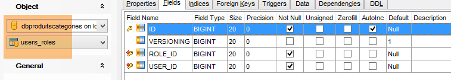
Um utilizador pode ter várias funções, e uma função pode agrupar vários utilizadores. Existe uma relação muitos-para-muitos representada pela tabela [USERS_ROLES].
- ID: chave primária;
- VERSION: coluna de controlo de versões da linha;
- USER_ID: identificador de um utilizador;
- ROLE_ID: identificador de uma função;
package generic.jpa.entities.dbproduitscategories;
import generic.jdbc.config.ConfigJdbc;
import javax.persistence.Column;
import javax.persistence.Entity;
import javax.persistence.FetchType;
import javax.persistence.GeneratedValue;
import javax.persistence.GenerationType;
import javax.persistence.Id;
import javax.persistence.JoinColumn;
import javax.persistence.ManyToOne;
import javax.persistence.Table;
import javax.persistence.Transient;
import javax.persistence.Version;
@Entity
@Table(name = ConfigJdbc.TAB_USERS_ROLES)
public class UserRole implements AbstractCoreEntity {
// propriedades
@Id
@GeneratedValue(strategy = GenerationType.IDENTITY)
@Column(name = ConfigJdbc.TAB_JPA_ID)
protected Long id;
@Version
@Column(name = ConfigJdbc.TAB_JPA_VERSIONING)
protected Long version;
@Transient
protected EntityType entityType=EntityType.POJO;
// um UserRole faz referência a um utilizador
@ManyToOne(fetch = FetchType.LAZY)
@JoinColumn(name = ConfigJdbc.TAB_USERS_ROLES_USER_ID, nullable = false)
private User user;
// um UserRole faz referência a um Role
@ManyToOne(fetch = FetchType.LAZY)
@JoinColumn(name = ConfigJdbc.TAB_USERS_ROLES_ROLE_ID, nullable = false)
private Role role;
// construtores
public UserRole() {
}
public UserRole(User user, Role role) {
this.user = user;
this.role = role;
}
// ------------------------------------------------------------
// redefinição de [equals] e [hashcode]
...
// getters e setters
...
}
- linhas 34-36: representam a chave estrangeira da tabela [USERS_ROLES] para a tabela [USERS];
- linhas 38-41: representam a chave estrangeira da tabela [USERS_ROLES] para a tabela [ROLES];
20.4.4. A camada [repositories]
 |
 |
A interface [UserRepository] gere o acesso às entidades [User]:
package spring.security.repositories;
import generic.jpa.entities.dbproduitscategories.Role;
import generic.jpa.entities.dbproduitscategories.User;
import org.springframework.data.jpa.repository.Query;
import org.springframework.data.repository.CrudRepository;
public interface UserRepository extends CrudRepository<User, Long> {
// lista de funções de um utilizador identificado pelo seu ID
@Query("select ur.role from UserRole ur where ur.user.id=?1")
Iterable<Role> getRoles(long id);
// lista de funções de um utilizador identificado pelo seu nome de utilizador único
@Query("select ur.role from UserRole ur where ur.user.login=?1 and ur.user.password=?2")
Iterable<Role> getRoles(String login, String password);
// pesquisa de um utilizador através do seu nome de utilizador
User findUserByLogin(String login);
}
- linha 9: a interface [UserRepository] estende a interface [CrudRepository] do Spring Data (linha 7);
- linhas 12-13: o método [getRoles(long id)] permite obter todas as funções de um utilizador identificado pelo seu [id]
- linhas 16-17: o mesmo, mas para um utilizador identificado pelo seu nome de utilizador e palavra-passe;
- linha 20: para encontrar um utilizador através do seu nome de utilizador;
A interface [RoleRepository] gere os acessos às entidades [Role]:
package spring.security.repositories;
import generic.jpa.entities.dbproduitscategories.Role;
import org.springframework.data.repository.CrudRepository;
public interface RoleRepository extends CrudRepository<Role, Long> {
// pesquisa de uma função através do seu nome
Role findRoleByName(String name);
}
- linha 7: a interface [RoleRepository] estende a interface [CrudRepository];
- linha 10: é possível pesquisar uma função pelo seu nome. Recorde-se aqui que a entidade [Role] possui um campo [name]. O método [findEntityByChamp] é implementado automaticamente pelo Spring Data. Por isso, não é necessário implementar aqui o método [finRoleByName]. Basta declará-lo na interface.
A interface [UserRoleRepository] gere o acesso às entidades [UserRole]:
package spring.security.repositories;
import generic.jpa.entities.dbproduitscategories.UserRole;
import org.springframework.data.repository.CrudRepository;
public interface UserRoleRepository extends CrudRepository<UserRole, Long> {
}
- linha 7: a interface [UserRoleRepository] limita-se a estender a interface [CrudRepository] sem lhe adicionar novos métodos;
20.4.5. A camada [DAO2]
 |
 |
Na camada [DAO2], encontram-se as mesmas classes que na camada [DAO2] do projeto [spring-security-server-jdbc-generic] analisado anteriormente no parágrafo 20.2.2. Basta agora implementá-las com a ajuda das classes da camada [repositories].
A classe [AppUserDetails] evolui da seguinte forma:
package spring.security.dao;
import generic.jpa.entities.dbproduitscategories.Role;
import generic.jpa.entities.dbproduitscategories.User;
import java.util.ArrayList;
import java.util.Collection;
import org.springframework.security.core.GrantedAuthority;
import org.springframework.security.core.authority.SimpleGrantedAuthority;
import org.springframework.security.core.userdetails.UserDetails;
import spring.data.infrastructure.DaoException;
import spring.security.repositories.UserRepository;
public class AppUserDetails implements UserDetails {
private static final long serialVersionUID = 1L;
// propriedades
private User user;
private UserRepository userRepository;
// local
private String simpleClassName = getClass().getSimpleName();
// construtores
public AppUserDetails() {
}
public AppUserDetails(User user, UserRepository userRepository) {
this.user = user;
this.userRepository = userRepository;
}
// -------------------------interface
@Override
public Collection<? extends GrantedAuthority> getAuthorities() {
Collection<GrantedAuthority> authorities = new ArrayList<>();
Iterable<Role> roles;
try {
roles = userRepository.getRoles(user.getId());
} catch (Exception e) {
e.printStackTrace();
throw new DaoException(167, e, simpleClassName);
}
for (Role role : roles) {
authorities.add(new SimpleGrantedAuthority(role.getName()));
}
return authorities;
}
...
}
- na linha 31, o construtor da classe recebe como segundo parâmetro o objeto [UserRepository], que permite à classe obter as funções de um determinado utilizador (linha 42);
O componente Spring [AppUserDetailsService], por sua vez, evolui da seguinte forma:
package spring.security.dao;
import generic.jpa.entities.dbproduitscategories.User;
import org.springframework.beans.factory.annotation.Autowired;
import org.springframework.security.core.userdetails.UserDetails;
import org.springframework.security.core.userdetails.UserDetailsService;
import org.springframework.security.core.userdetails.UsernameNotFoundException;
import org.springframework.stereotype.Service;
import spring.data.infrastructure.DaoException;
import spring.security.repositories.UserRepository;
@Service
public class AppUserDetailsService implements UserDetailsService {
@Autowired
private UserRepository userRepository;
// local
private String simpleClassName = getClass().getName();
@Override
public UserDetails loadUserByUsername(String login) throws UsernameNotFoundException {
// procura-se o utilizador através do seu nome de utilizador
User user;
try {
user = userRepository.findUserByLogin(login);
} catch (Exception e) {
throw new DaoException(168, e, simpleClassName);
}
// encontrado?
if (user == null) {
throw new UsernameNotFoundException(String.format("login [%s] inexistant", login));
}
// apresentam-se os detalhes do utilizador
return new AppUserDetails(user, userRepository);
}
}
- linha 18: injeção do componente Spring [userRepository], que permitirá ao serviço identificar o utilizador através do seu nome de utilizador, linha 27;
No final, percebe-se que só é necessário o [userRepository] e não os outros dois repositórios [roleRepository, userRoleRepository]. Estes serão utilizados no projeto seguinte, que visa preencher as tabelas [USERS, ROLES, USERS_ROLES].
20.4.6. Os testes
O serviço web seguro é iniciado com a configuração denominada [spring-security-server-jpa-generic-hibernate-eclipselink] [1]. O teste [JUnitTestDao] do cliente genérico é iniciado com a configuração denominada [spring-security-client-generic-JUnitTestDao] [2]:
 |
Os testes são bem-sucedidos.
20.5. O projeto Eclipse [spring-security-create-users]
 |
 |
20.5.1. A base de dados
A execução do projeto preenche as tabelas [USERS, ROLES, USERS_ROLES] a partir da tabela [dbproduitscategories]:

|
|
Os identificadores criados [login/passwd] são os seguintes: [admin/admin], [user/user], [guest/guest]. Por predefinição, as palavras-passe estão encriptadas.
|
20.5.2. Configuração do Maven
O projeto é um projeto Maven configurado pelo seguinte ficheiro [pom.xml]:
<?xml version="1.0" encoding="UTF-8"?>
<project xmlns="http://maven.apache.org/POM/4.0.0" xmlns:xsi="http://www.w3.org/2001/XMLSchema-instance"
xsi:schemaLocation="http://maven.apache.org/POM/4.0.0 http://maven.apache.org/xsd/maven-4.0.0.xsd">
<modelVersion>4.0.0</modelVersion>
<groupId>dvp.spring.database</groupId>
<artifactId>spring-security-create-users-jpa</artifactId>
<version>0.0.1-SNAPSHOT</version>
<packaging>jar</packaging>
<name>spring-security-create-users-jpa</name>
<description>création de utilisateurs dans la base [dbproduitscategories]</description>
<parent>
<groupId>org.springframework.boot</groupId>
<artifactId>spring-boot-starter-parent</artifactId>
<version>1.2.3.RELEASE</version>
</parent>
<dependencies>
<!-- Spring Security -->
<dependency>
<groupId>org.springframework.boot</groupId>
<artifactId>spring-boot-starter-security</artifactId>
</dependency>
<!-- spring-security-server-jpa-generic -->
<dependency>
<groupId>dvp.spring.database</groupId>
<artifactId>spring-security-server-jpa-generic</artifactId>
<version>0.0.1-SNAPSHOT</version>
</dependency>
</dependencies>
<properties>
<project.build.sourceEncoding>UTF-8</project.build.sourceEncoding>
<java.version>1.7</java.version>
</properties>
<build>
<plugins>
<plugin>
<groupId>org.apache.maven.plugins</groupId>
<artifactId>maven-surefire-plugin</artifactId>
<version>2.18.1</version>
</plugin>
</plugins>
</build>
</project>
- linhas 22-25: dependência do framework Spring Security. O algoritmo de encriptação de palavras-passe é fornecido por este framework
- linhas 27-31: dependência do projeto [spring-security-server-jpa-generic] que acabámos de criar. Este projeto implementa as camadas [repositories] e [JPA] do projeto;
No final, as dependências são as seguintes:
 |
20.5.3. A camada [console]
 |
Uma vez que as camadas [repositories] e [JPA] são implementadas pela dependência [spring-security-server-jpa-generic], resta apenas implementar a camada [console].
 |
- [AppConfig] é a classe de configuração Spring do projeto;
- [CreateUsers] é a classe executável que cria utilizadores e funções;
- [Base64Encoder] é uma classe de suporte para gerar o código Base64 de um par [login, password]. Já a utilizámos. Não é útil para este projeto;
A classe de configuração Spring [AppConfig] é a seguinte:
package spring.security.install;
import generic.jpa.config.ConfigJpa;
import org.springframework.context.annotation.Configuration;
import org.springframework.context.annotation.Import;
import org.springframework.data.jpa.repository.config.EnableJpaRepositories;
@Configuration
@EnableJpaRepositories(basePackages = { "spring.security.repositories" })
@Import({ ConfigJpa.class })
public class AppConfig {
}
- linha 10: indica-se onde encontrar os [repositories] da aplicação. Estes encontram-se no pacote [spring.security.repositories] da dependência [spring-security-server-jpa-generic]
- linha 11: importam-se os beans da classe [ConfigJpa], que configura a camada [JPA] do projeto. Esta classe encontra-se na dependência [mysql-config-jpa-hibernate]:
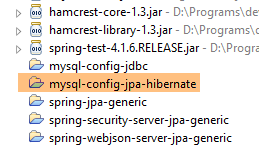 |
A classe [CreateUsers] é a seguinte:
package spring.security.install;
import generic.jpa.entities.dbproduitscategories.Role;
import generic.jpa.entities.dbproduitscategories.User;
import generic.jpa.entities.dbproduitscategories.UserRole;
import org.springframework.context.annotation.AnnotationConfigApplicationContext;
import org.springframework.security.crypto.bcrypt.BCrypt;
import spring.security.repositories.RoleRepository;
import spring.security.repositories.UserRepository;
import spring.security.repositories.UserRoleRepository;
public class CreateUsers {
public static void main(String[] args) {
// fim
System.out.println("Travail en cours...");
// criam-se três utilizadores
String[] logins = { "admin", "user", "guest" };
String[] passwds = { "admin", "user", "guest" };
String[] roles = { "admin", "user", "guest" };
// Contexto Spring
AnnotationConfigApplicationContext context = new AnnotationConfigApplicationContext(AppConfig.class);
UserRepository userRepository = context.getBean(UserRepository.class);
RoleRepository roleRepository = context.getBean(RoleRepository.class);
UserRoleRepository userRoleRepository = context.getBean(UserRoleRepository.class);
for (int i = 0; i < logins.length; i++) {
// recuperar as informações do utilizador n.º i
String login = logins[i];
String password = passwds[i];
String roleName = String.format("ROLE_%s", roles[i].toUpperCase());
// a função já existe?
Role role = roleRepository.findRoleByName(roleName);
// se não existir, cria-se
if (role == null) {
role = roleRepository.save(new Role(roleName));
}
// O utilizador já existe?
User user = userRepository.findUserByLogin(login);
// se não existir, cria-se
if (user == null) {
// a palavra-passe é hashada com o bcrypt
String crypt = BCrypt.hashpw(password, BCrypt.gensalt());
// guardamos o utilizador
user = userRepository.save(new User(null, null, login, login, crypt));
// criamos a relação com a função
userRoleRepository.save(new UserRole(user, role));
} else {
// o utilizador já existe — tem a função solicitada?
boolean trouvé = false;
for (Role r : userRepository.getRoles(user.getId())) {
if (r.getName().equals(roleName)) {
trouvé = true;
break;
}
}
// se não for encontrado, cria-se a relação com a função
if (!trouvé) {
userRoleRepository.save(new UserRole(user, role));
}
}
}
// encerramento do contexto Spring
context.close();
// fim
System.out.println("Travail terminé...");
}
}
- linhas 22-24: definem o nome de utilizador, a palavra-passe e a função de três utilizadores;
- linha 27: o contexto Spring é construído a partir da classe de configuração [AppConfig];
- linhas 28-30: recuperam-se as referências das três instâncias de [Repository] que podem ser úteis para criar um utilizador;
- linha 31: criam-se os três utilizadores;
- linhas 33-35: as informações para criar o utilizador n.º i;
- linha 37: verifica-se se a função já existe;
- linhas 39-41: se não for o caso, cria-se na base de dados. Terá um nome do tipo [ROLE_XX];
- linha 43: verifica-se se o nome de utilizador já existe;
- linhas 45-52: se o nome de utilizador não existir, cria-se na base de dados;
- linha 47: encripta-se a palavra-passe. Aqui, utiliza-se a classe [BCrypt] do Spring Security (linha 8). Por isso, são necessários os ficheiros deste framework. O ficheiro [pom.xml] inclui esta dependência:
<dependency>
<groupId>org.springframework.boot</groupId>
<artifactId>spring-boot-starter-security</artifactId>
</dependency>
- linha 49: o utilizador é guardado na base de dados;
- linha 51: assim como a relação que o liga à sua função;
- linhas 55-60: caso em que o login já exista – verifica-se então se, entre as suas funções, já se encontra a função que se pretende atribuir-lhe;
- linhas 62-64: se a função procurada não for encontrada, cria-se uma linha na tabela [USERS_ROLES] para associar o utilizador à sua função;
- não nos protegemos contra eventuais exceções. Trata-se de uma classe de suporte para criar utilizadores rapidamente;
Para executar o projeto, deve-se executar a configuração de execução denominada [spring-security-create-users-hibernate-eclipselink]:
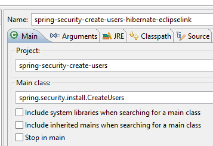 |
Acabámos de criar dois serviços web seguros:
- um com a arquitetura [security / web / JDBC / MySQL];
- o outro com uma arquitetura [security / web / Hibernate / MySQL];
Vamos agora abordar duas outras arquiteturas:
- uma arquitetura [security / web / EclipseLink / SQL Server 2014 Express];
- uma arquitetura [security / web / OpenJpa / Oracle Express];
20.5.4. Arquitetura [security / web / EclipseLink / SQL Server]
 |
 |
- na [1], carregam-se os projetos que configuram uma camada [JDBC / SQL Server] e uma camada [JPA / EclipseLink / SQL Server];
Nota: prima Alt-F5 e, em seguida, regenera todos os projetos Maven.
Partimos do princípio de que o servidor SGBD SQL está em execução e que a base de dados [dbproduitscategories] foi gerada. Em primeiro lugar, temos de preencher as tabelas [USERS, ROLES, USERS_ROLES] desta base de dados. Para tal, execute a configuração de execução denominada [spring-security-create-users-hibernate-eclipselink]:
 |  |
Esta configuração deve preencher as três tabelas com dados:
 |  |
 |
 |
- inicie o serviço web seguro com a configuração denominada [spring-security-server-jpa-generic-hibernate-eclipselink][1];
- execute o teste JUnitTestDao com a configuração denominada [spring-security-client-generic-JUnitTestDao][2]. Deve ser bem-sucedido [3];
 |
 |
20.5.5. Arquitetura [security / web / OpenJpa / Oracle Express]
 |
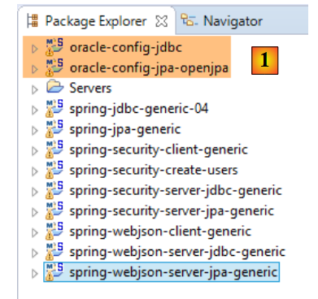 |
- no [1], carregam-se os projetos que configuram uma camada [JDBC / Oracle Express] e uma camada [JPA / OpenJpa / Oracle Express];
Nota: prima Alt-F5 e, em seguida, regenera todos os projetos Maven.
Partimos do princípio de que o Oracle Express SGBD está em execução e que a base de dados [dbproduitscategories] foi gerada. Em primeiro lugar, temos de preencher as tabelas [USERS, ROLES, USERS_ROLES] desta base de dados. Para tal, execute a configuração de execução denominada [spring-security-create-users-openjpa]:
 |  |
Esta configuração deve preencher as três tabelas com dados:
 | 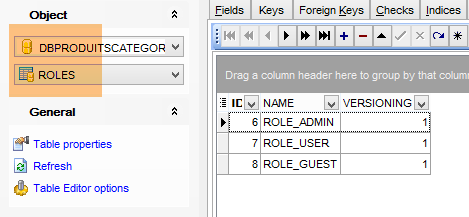 |
 |
 |
- inicie o serviço web seguro com a configuração denominada [spring-security-server-jpa-generic-openjpa][1-2];
- execute o teste JUnitTestDao com a configuração denominada [spring-security-client-generic-JUnitTestDao][3]. Deve ser bem-sucedido [4];
 |
 |